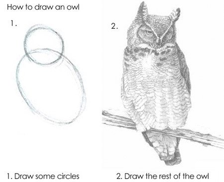
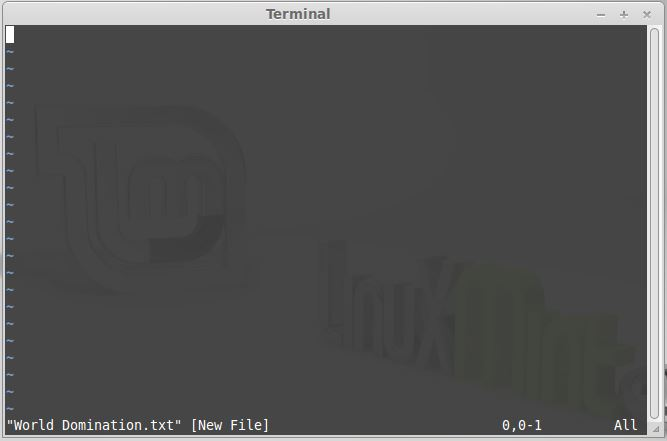
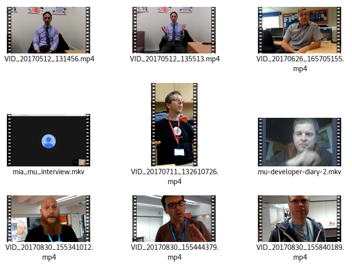
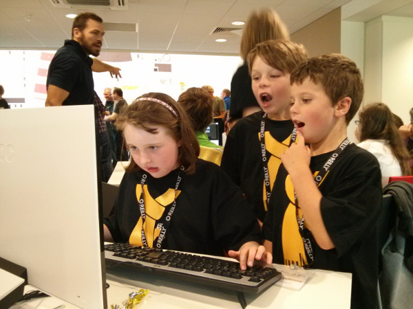

The problem
Have you ever tried to teach 8 year olds to program?

The transition from visual to text based programming is hard
IDEs are for developers and not learners
Why not use IDLE?


Modus Operandi:
Ask teachers what would help
Observe students writing Python
Draw upon developer experience

Experiment, test, fix (repeat)
The Mu philosophy:
- Less is more (remove all unnecessary distractions);
- Keep it simple (so Mu is easy to understand);
- Walk the path of least resistance (Mu should be easy);
- Have fun (learning should be a positive experience).